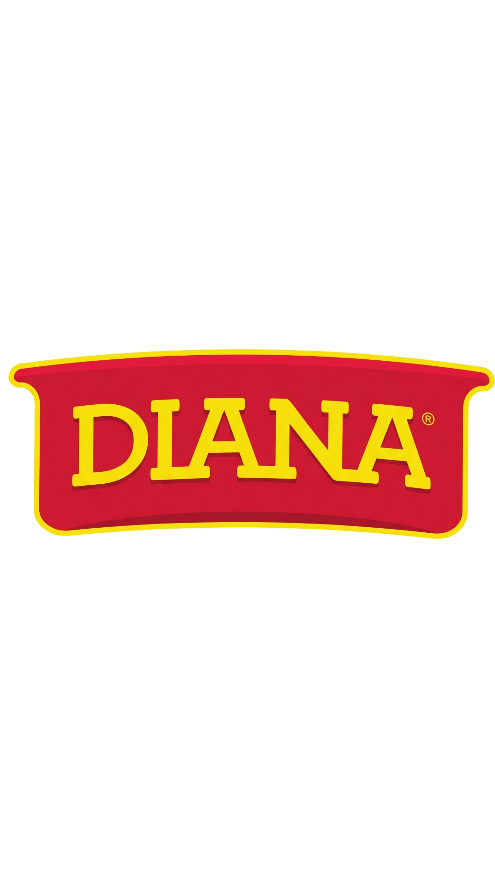

PIEZA SONORA 01 · POP
Pop energético
Melódico, cercano y fácil de recordar.
Rediseño de producto para una nueva audiencia — gym-goers.
Ruta A · nuevo canal: gimnasios, vending y supermercados/tiendas de conveniencia.
El punto de partida es un producto existente con reconocimiento en el mercado, pero presentado desde códigos asociados principalmente a consumo familiar y momentos cotidianos.
Personas de 18 a 35 años con una rutina de actividad física frecuente.
Gimnasios, vending y conveniencia fitness.
Barbacoa y Limón, con presentación individual.
No se rediseña la identidad corporativa de Diana.
“Crunch” convierte una característica sensorial —sonido y textura— en un activo verbal de campaña. El “+” señala una versión adaptada y de valor añadido, no una afirmación nutricional específica.
La redacción final de cualquier claim nutricional debe contrastarse con la información nutricional y legal vigente antes de publicar.
| Decisión | Qué cambia | Por qué responde al nuevo canal/audiencia |
|---|---|---|
| Porción | 30–35 g, individual | Facilita consumo portable; encaja mejor en bolso, casillero o vending que una bolsa familiar. |
| Textura | Énfasis en textura extra crujiente | El “crunch” se vuelve experiencia y lenguaje de campaña. |
| Empaque | Nueva presentación + QR | Destaca en un entorno de gimnasio y conecta el producto físico con contenido digital. |
| Sabores | Barbacoa y Limón | Se conserva el portafolio definido y se diferencian por código cromático. |
El sonido se convierte en un recurso narrativo: primero se escucha, luego se descubre quién está comiendo.
La dirección visual no pretende que Diana parezca otra marca; busca que el producto puntual pueda convivir visualmente con el entorno fitness.
Evoca acero, máquinas y casilleros.
Energía cálida y código de sabor.
Frescura y señal activa.
Lectura clara y estética editorial.
Big Shoulders / display condensada y angular. Reservada para titulares, nombre y mensajes de alto impacto.
Documental y natural. Luz tenue/natural, tratamiento desaturado, acentos cálidos, fondos oscuros y producto claramente iluminado en planos finales.
Movimiento y ritmo.
Personalidad sin actuación exagerada.
Acompaña el contexto fitness.
Cierre claro, no agresivo.
Cinco piezas audiovisuales complementarias desarrolladas para el concepto: cuatro piezas verticales de situación y una pieza horizontal de producto. La campaña principal se presenta por separado con 1 video principal + 5 posts.
4 × 9:16 + 1 × 16:9Variaciones/piezas sonoras desarrolladas para el concepto como parte de este proyecto académico; no representan jingles oficiales de Diana.
Melódico, cercano y fácil de recordar.
Ritmo activo para acompañar la rutina fitness.
Breve, reconocible y centrada en el sonido del crunch.
La arquitectura del empaque conserva la lógica del producto puntual y utiliza el color para distinguir sabores.
Presentación individual diferenciada por sabor para el canal fitness.

Dinámica, carismática y enérgica. En los cierres debe mantenerse segura, directa y natural.
30–35 g, textura enfatizada, empaque adaptado y QR.
Validar con costos, margen y referencias del canal.
Gimnasios, vending y supermercados/tiendas de conveniencia.
Sampling, contenido y microinfluencers fitness locales.
La lógica es abrir una ocasión de consumo adicional. El nuevo canal —gimnasios, vending y supermercados/tiendas de conveniencia— conecta el producto con momentos de compra y consumo individual alrededor de la actividad física.
Una misma identidad, un mismo mensaje y una misma lógica visual.
Reencuadrar la percepción del snack para la audiencia fitness.
Ver publicación en Instagram
Humor situacional basado en escuchar el crunch de otra persona.
Ver publicación en Instagram
Gimnasios, vending/tiendas de conveniencia participantes y CTA.
Ver publicación en Instagram
El testeo es previo a la entrega final. No sustituye la campaña formal.
Se recopilaron 25 respuestas reales, superando el mínimo de 20 establecido.
Si vieras Diana Crunch+ en tu gimnasio, ¿te llamaría la atención? ¿Por qué?
| Patrón | N.º | Implicación |
|---|---|---|
| Atractivo visual / empaque | 8 — 32% | El empaque, los colores y la presentación generan interés y llaman la atención.“Su empaque se ve fino” · “se ve elegante y apetitosa” |
| Gym / ejercicio | 7 — 28% | El concepto se asocia claramente con entrenamiento y consumo después del ejercicio.“es acertada para un gym” · “Amaría que estuviera en mi gym” |
| Sabor / atractivo sensorial | 9 — 36% | Los sabores generan curiosidad y apetencia; se mantiene Barbacoa y Limón.“se antojan :)” · “los sabores se ven ricos” |
| Nutrición / proteína / salud | 5 — 20% | Algunos participantes relacionan el producto con proteína, salud o balance.“Deliciosas y cantidad de proteína” · “para una vida nutritiva” |
| Conveniencia después de jornada o entrenamiento | 5 — 20% | Las respuestas señalaron la conveniencia del producto después de la jornada o el entrenamiento. |
| Precio | 1 — 4% | El precio apareció como una consideración en una respuesta. |
Los porcentajes no son excluyentes: una misma respuesta puede pertenecer a más de una categoría.
25 capturas de las respuestas reales del testeo.
El testeo no evidenció la necesidad de cambiar el nombre Crunch+, el concepto central ni la dirección visual. La respuesta favorable hacia la presentación, los colores y el contexto de gimnasio permite mantener estos elementos en la versión final.
Como ajuste de comunicación, conviene mantener clara la relación entre Crunch+, el formato individual y el momento de consumo posterior o cercano al entrenamiento, ya que estas asociaciones aparecieron repetidamente en las respuestas.
También se recomienda evitar convertir las percepciones de los participantes sobre “saludable” o “proteína” en promesas no demostradas. En la comunicación final se mantienen los atributos definidos en el proyecto y esas opiniones se presentan como percepciones del público validado.
Esta estructura resume el flujo del proyecto; la evidencia de ejecución, responsables y seguimiento se muestra directamente desde ClickUp.
El proyecto fue gestionado mediante ClickUp durante un sprint de dos semanas, organizado en ocho fases y tareas específicas asignadas al equipo. La siguiente vista permite consultar directamente la planificación y el seguimiento del proyecto.
Crunch+ convierte la textura, la portabilidad y el sonido del producto en códigos de una experiencia fitness.